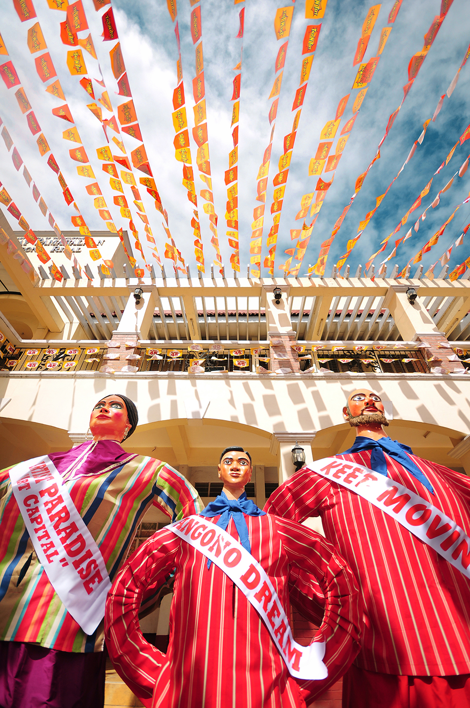

Polillo Group of Islands
Polillo Group of Islands
A remote group of islands in Quezon Province known for its pristine beaches, rich marine life, and untouched natural beauty. It offers a peaceful escape ideal for island hopping and eco-tourism.


Jomalig Island
A remote golden-sand island in Quezon known for its unique golden beaches, scenic coastlines, and peaceful island lifestyle far from the city.
Jomalig Island
QUEZON PROVINCE CUISINE


Local Food Delicacies
Quezon Province is known for its rich and comforting Filipino dishes that reflect its coastal and agricultural lifestyle.
Ginataang Sariwa
Fresh vegetables and seafood cooked in coconut milk.
Sinantol
Santol cooked in creamy coconut sauce with shrimp or pork.
FESTIVALS & EVENTS

Sumaka

Higantes